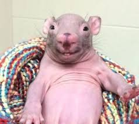

Roendécio, 37 anos, é um rato altamente experiente em ambientes urbanos e rurais, com forte habilidade em exploração de espaços complexos, localização de recursos e adaptação a diferentes condições. Ao longo de sua trajetória, desenvolveu competências avançadas em trabalho em equipe, coleta estratégica de alimentos e evasão de riscos, sempre demonstrando agilidade, inteligência e resiliência. É conhecido por sua curiosidade apurada e capacidade de encontrar soluções criativas em situações desafiadoras.
Com excelente senso de direção e faro apurado, Roendécio destaca-se na identificação de oportunidades e na otimização de rotas em ambientes variados, como cozinhas, armazéns e redes de esgoto. Possui perfil proativo, disciplinado e colaborativo, contribuindo para o bem-estar e a sobrevivência do grupo. Busca continuamente novos desafios onde possa aplicar suas habilidades e ampliar seu conhecimento, mantendo-se sempre um passo à frente dos obstáculos.